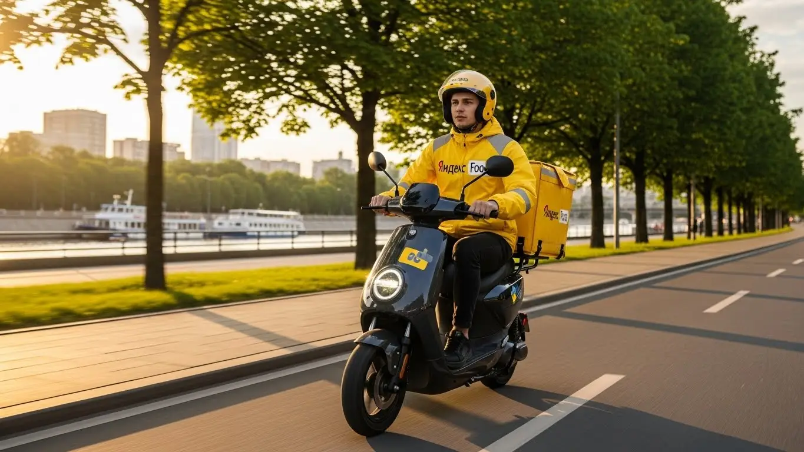
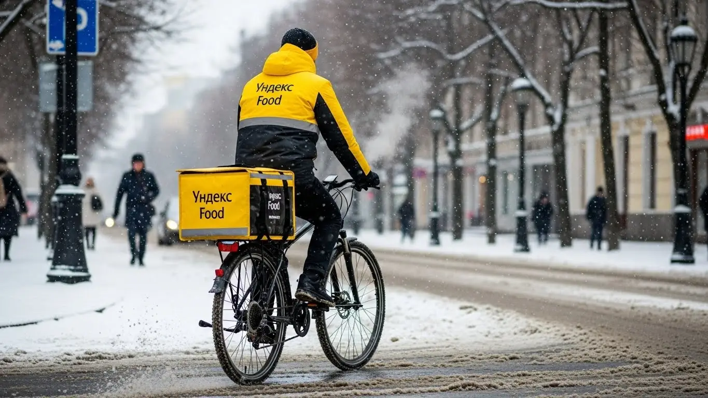

Доход курьера Яндекс Еды в Архангельске 2025-2026: разбор

- Работа курьером Яндекс Еды в Архангельске: для кого эта вакансия и что вы получите
- Сколько вы будете зарабатывать курьером в Архангельске: калькулятор дохода и разбор выплат
- Реальный заработок курьера в Архангельске: смены и месячный доход
- График работы и форматы занятости
- Требования к кандидату и документы
- Самозанятость, налоги и юридическая чистота
- Пошаговое оформление и первый выход на линию в Архангельске
- Пешком, на вело или на авто: что выгоднее в Архангельске
- Районы, маршруты и «топовые» зоны заказов в Архангельске
- Безопасность, страховка, штрафы и оплата простоя
- Плюсы и возможные минусы работы курьером в Архангельске
- Реальные истории и отзывы курьеров из Архангельска
- Ответы на главные вопросы о работе курьером Яндекс Еды в Архангельске
- Короткие ответы на главные вопросы
- Итоги и ваш следующий шаг
Все города
Думаешь, работа курьером в Архангельске — это просто «взял заказ, отвёз, получил деньги»? Боишься, что будешь зарабатывать копейки, стоять в вечных пробках на Воскресенской или убивать подвеску на окраинах Майской Горки? Забудь про рекламные сказки о «доходе до 100 тысяч». Я расскажу, как обстоят дела на самом деле, когда ты остаешься один на один с заказом, ледяным ветром с Двины и реальным архангельским трафиком.
Поверь, 9 из 10 новичков в Архангельске сливаются в первый же месяц не из-за лени, а потому что никто не объяснил им простую математику. Они не учли, что из заработка нужно вычесть налог, бензин или ремонт велика. Не знали, что рейтинг решает всё и что доставка в Соломбалу и на Варавино — это две большие разницы по времени и деньгам. В итоге — разочарование и ощущение, что тебя обманули. А на деле — ты просто не был готов к местной специфике.
В этом гиде мы всё разберём по косточкам. Посчитаем, сколько чистыми можно заработать в Архангельске пешком, на велосипеде и на авто. Выясним, в каких районах всегда есть заказы, а куда лучше не соваться в час пик. Я покажу на реальных примерах, как наша северная погода влияет на доход, как не нарваться на штрафы, которые съедят всю дневную выручку, и почему иногда лучше отказаться от заказа, чтобы не уйти в минус. Если вы хотите сразу увидеть краткую сводку условий и подать заявку, вся актуальная информация про работу курьером Яндекс Еда в Архангельске собрана на официальной странице.
Меня зовут Алексей. Я сам откатал не одну тысячу заказов по Архангельску, а сейчас у меня свой небольшой таксопарк-партнёр. Я видел эту кухню со всех сторон — и как курьер на линии, и как тот, кто помогает ребятам стартовать. Так что никакой рекламы и пустых обещаний. Только факты, цифры и советы, которые помогут тебе не просто выжить, а хорошо зарабатывать в доставке именно в нашем городе. Готов? Тогда давай по порядку, сейчас всё разложу по полочкам.
Чтобы тебе было проще сориентироваться, мы подготовили короткий гид по ключевым темам статьи. Пройдись по нему, чтобы сразу найти ответы на самые важные для тебя вопросы.
Что ты точно узнаешь из этого разбора
В этой статье ты ТОЧНО узнаешь:
- Сколько реально заработать за смену в Архангельске пешком, на вело и на авто?
- В каких районах Архангельска больше всего заказов и как ловить «фиолетовые зоны» с повышенной оплатой?
- За что на самом деле снижают рейтинг и как избежать штрафов, которые съедят весь дневной заработок?
- Что выгоднее в Архангельске — работать пешком, на велосипеде или на своей машине?
- Как быстро оформить самозанятость и сколько налогов придётся платить с дохода?
А если тебе некогда читать всю статью — переходи сразу к заключению, где ты найдёшь короткие ответы на все эти вопросы и указания, в каких разделах искать подробности.
А вот наглядная инфографика о том, как распределяется доход курьера в Архангельске в зависимости от типа занятости и транспорта.
Работа курьером в Архангельске: ключевые цифры
Работа курьером Яндекс Еды в Архангельске: для кого эта вакансия и что вы получите
Давай по-честному разберёмся, кому работа курьером в Архангельске действительно зайдёт, а кому лучше и не начинать. Я видел много ребят, которые приходили и уходили, и могу точно сказать: это не для всех, но для многих — отличный вариант. Главное — понимать, что ты от этого хочешь получить.
Это не та работа, где нужно сидеть от звонка до звонка. Здесь ты сам себе хозяин: у тебя свободный график, и ты сам решаешь, когда и сколько работать. Поэтому, если тебе нужна гибкость и быстрые деньги без начальника над душой, то ты по адресу.

Кому подойдёт эта работа в Архангельске
Эта вакансия, по моему опыту, идеально подходит нескольким категориям людей. Во-первых, студентам. Учишься в САФУ или СГМУ — откатал пару часов после пар, получил деньги на карту, и голова не болит, где взять на жизнь. График полностью подстраиваешь под себя, пропуская дни перед экзаменами.
Во-вторых, тем, кому нужна подработка или второй источник дохода. Если у тебя есть основная работа со сменным графиком или свободными вечерами, доставка — отличный способ превратить это время в деньги. Никаких обязательств на полный день: вышел на линию, когда удобно, и заработал.
Также это хороший вариант для тех, кто временно остался без работы и ищет способ быстро встать на ноги. Важный плюс — ежедневные выплаты, которые помогают сразу закрывать текущие расходы. И конечно, работа курьером подойдёт всем, кто просто не любит сидеть на месте и хочет совмещать движение с заработком.
Главные преимущества для жителей районов Октябрьский, Ломоносовский, Соломбальский
Одно из главных удобств в Архангельске — возможность работать прямо у своего дома. Тебе не нужно тратить час, чтобы добраться через весь город до «офиса». Живёшь, например, в Октябрьском районе — выбираешь его в приложении и начинаешь смену, как только вышел из подъезда. Заказы из ближайших кафе и магазинов будут твоими.
То же самое касается Ломоносовского или даже более отдалённого Соломбальского района. Везде есть свои точки притяжения: рестораны, магазины, жилые комплексы. Система сама подбирает тебе заказы так, чтобы не гонять тебя с одного берега Двины на другой без надобности. Это экономит и время, и силы, особенно если ты пеший курьер или на велосипеде.
Кратко о доходе и условиях
Если говорить о деньгах, то в Архангельске цифры вполне реальные. Активный курьер на велосипеде или авто за полную смену (8–10 часов) может заработать от 2500 до 4500 рублей. Если выходить на подработку на 3–4 часа в пиковое время, можно рассчитывать на 1000–1800 рублей. В месяц при полной занятости выходит в среднем 60 000 – 85 000 рублей, а у самых шустрых и больше.
Ключевые условия просты: свободный график, который ты сам составляешь в приложении «Яндекс Про», и ежедневные выплаты на карту. Опыт работы не требуется — всему научат на коротком онлайн-инструктаже. Ты просто заполняешь анкету, проходишь обучение, получаешь фирменный термокороб и уже на следующий день можешь выйти на линию, чтобы получить первые деньги.
Пример из практики: У меня работает парень, студент САФУ, живёт в общежитии в Октябрьском районе. Он выходит на линию 4-5 раз в неделю после учёбы, примерно на 4 часа. Катается на велосипеде по центру и своему району. За вечер у него выходит в среднем 1500-2000 рублей. В месяц набегает около 30 тысяч — ему хватает и на съёмную комнату, и на личные расходы, при этом учёбу он не запускает.
В общем, работа курьером в Архангельске — это в первую очередь гибкость и возможность быстрого заработка без сложных требований. Главное — трезво оценивать свои силы и понимать, что доход напрямую зависит от твоего желания работать. Мой совет: начни со своего района, выбери короткие смены по 3-4 часа и посмотри, как пойдёт. Так ты без стресса втянешься в процесс.
Сколько вы будете зарабатывать курьером в Архангельске: калькулятор дохода и разбор выплат
Теперь к самому интересному — к деньгам. Важно понимать, что твой заработок курьером — это не фиксированная ставка. Это конструктор, который ты собираешь сам в течение смены. И чем лучше ты понимаешь, из каких деталей он состоит, тем больше сможешь зарабатывать.
Система оплаты в Яндекс Еде прозрачна, все начисления видны в приложении «Яндекс Про» в реальном времени. Ты всегда знаешь, за что и сколько получил. Нет никаких «серых» схем или непонятных вычетов. Давай разберём по косточкам, из чего складывается итоговая сумма за день.
Из чего складывается доход курьера
Твой доход складывается из нескольких частей. Основа — это оплата за выполнение заказа (подача в ресторан и доставка клиенту) и доплата за расстояние: чем дальше везти, тем больше платят.
Сверху начисляются повышающие коэффициенты. В часы пик (обед, ужин), в плохую погоду или в районах с высоким спросом на карте в «Яндекс Про» появляются цветные зоны. Работая там, ты получаешь больше, так как стоимость заказа умножается на коэффициент.
Кроме того, есть персональные бонусы за выполнение определённого числа заказов за смену и чаевые от клиентов — они полностью твои, сервис не берёт с них комиссию.
Наконец, твой доход защищают приятные фишки: оплата простоя, если заказ в ресторане ещё не готов, и компенсация проезда на общественном транспорте для очень далёких доставок.
Как пользоваться калькулятором дохода
Чтобы прикинуть свой потенциальный заработок, можно использовать специальный калькулятор. В нём всё просто: ты выбираешь свой город — Архангельск, затем указываешь тип доставки (пеший курьер, на велосипеде или на авто). После этого выставляешь, сколько часов в день и сколько дней в неделю планируешь работать.
На выходе калькулятор покажет примерный диапазон твоего заработка за день и за месяц. Понятно, что это прогноз, а не гарантия, так как реальный заработок зависит от спроса и твоей активности. Но этот инструмент помогает получить общее представление и понять, на какие цифры можно ориентироваться при разной занятости.
Калькулятор дохода курьера в Архангельске
Выберите, сколько планируете работать, чтобы увидеть примерный месячный доход.
Ваш примерный доход в месяц:
Это примерно 160 часов в месяц при средней ставке 450 ₽/час.
*Расчет является ориентировочным. Реальный доход зависит от спроса, бонусов, чаевых и повышенных коэффициентов в вашем городе.
Чтобы увидеть самые актуальные условия и сразу подать заявку, посмотри страницу работа курьером Яндекс Еда в твоём городе — там есть и калькулятор, и форма для анкеты.
Примеры расчёта для пешего, вело- и авто‑курьера в Архангельске
Чтобы было нагляднее, давай рассмотрим три реальных сценария для Архангельска.
- Пеший курьер. Обычно работает в центре, в районе проспекта Чумбарова-Лучинского и улицы Воскресенской, где много заказов на короткие дистанции. Выходит на 4 часа в обеденный пик (с 12:00 до 16:00). За это время успевает выполнить 6–8 коротких заказов. С учётом бонусов и возможных чаевых его заработок за смену составит примерно 1200–1600 рублей.
- Велокурьер. Выбирает для работы спальные районы, например Ломоносовский и Октябрьский. Работает вечером, 5 часов (с 17:00 до 22:00). За счёт скорости выполняет 10–12 заказов на средние дистанции. Его доход за смену может достигать 1800–2500 рублей.
- Курьер на автомобиле. Работает полную смену 8 часов, охватывая весь город, включая дальние заказы в Соломбалу или на левый берег. Особенно выгодно ему работать в плохую погоду, когда коэффициенты максимальные. За день он может выполнить 20–25 заказов и заработать 3500–5000 рублей (за вычетом расходов на бензин).
Сравнение потенциального дохода курьеров в Архангельске
| Параметр | Пеший курьер | Велокурьер | Автокурьер |
|---|---|---|---|
| Зоны работы | Центр (плотная застройка) | Центр и спальные районы | Весь город, пригород |
| Примерный доход за 4 часа | 1200–1600 ₽ | 1400–1900 ₽ | 1800–2400 ₽ |
| Примерный доход за 8 часов | 2200–3000 ₽ | 2800–3800 ₽ | 3500–5000 ₽ |
| Главное преимущество | Нет расходов на транспорт | Скорость, маневренность | Комфорт, дальние заказы |
Пример из практики: Один из моих водителей-курьеров на прошлой неделе в пятницу вечером, когда шёл сильный дождь, специально вышел на линию. В центре карта «горела» фиолетовым — это максимальный коэффициент. Он взял заказ из ресторана на Воскресенской с доставкой в Соломбалу. За один этот заказ, который занял у него около 40 минут, он получил почти 700 рублей. Потом выполнил ещё несколько заказов по высокому тарифу и за 4 часа работы увёз домой больше 2500 рублей.
Итог простой: твой заработок в Архангельске зависит не только от количества часов, но и от того, как ты работаешь. Понимание, из чего складывается доход, помогает принимать верные решения. Мой совет: всегда следи за картой спроса в «Яндекс Про» и старайся выходить на линию, когда действуют повышенные коэффициенты. Это самый верный способ увеличить свой доход без лишних переработок.
Реальный заработок курьера в Архангельске: смены и месячный доход
Давай начистоту, без рекламных обещаний. Твой заработок курьером — это не фиксированная зарплата, а результат твоей работы. Сколько часов ты на линии, какой у тебя транспорт, в какое время и погоду работаешь — все эти условия напрямую влияют на итоговую сумму в приложении «Яндекс Про». В Архангельске, как и в любом другом городе, есть свои пики и спады, свои «хлебные» районы и часы. Главное — понять эту систему, и тогда доход будет стабильным.
Диапазон дохода для подработки и полной занятости
Если ты ищешь подработку на несколько часов в день, чтобы закрыть мелкие расходы или накопить на что-то, цифры будут одни. Если же ты готов работать полный день, как на основной работе, — совсем другие.
Для подработки, выходя на 2–4 часа в день, ориентируйся на следующие цифры в Архангельске:
- Пеший курьер: За короткую смену в центре, например, в районе Троицкого проспекта, можно сделать 800–1500 рублей. Идеально для студентов после пар.
- Велокурьер: На велосипеде ты мобильнее, поэтому за те же 3–4 часа твой доход может составить 1000–1800 рублей. Ты легко сможешь обслуживать заказы в пределах Октябрьского и Ломоносовского районов.
- Автокурьер: На машине за короткий слот можно заработать 1500–2500 рублей, особенно если брать заказы на дальние расстояния или в плохую погоду. Но не забывай про расходы на бензин.
При полной занятости (8–10 часов в день, 5 дней в неделю) доход уже серьёзнее:
- Пеший курьер: В месяц выходит в среднем 45 000 – 70 000 рублей. Физически это непросто, но вполне реально, если работать в зонах с плотной застройкой.
- Велокурьер: Здесь месячный доход может достигать 55 000 – 85 000 рублей. Ты не зависишь от пробок и можешь быстро перемещаться между заказами.
- Автокурьер: Самый высокий потенциальный доход — от 80 000 до 120 000 рублей в месяц и выше. Но помни, это «грязными», без учёта расходов на топливо и обслуживание машины.
Как район, время суток и погода влияют на доход
Твой заработок — величина непостоянная, и на неё влияют три главных фактора. Поняв их, ты сможешь зарабатывать больше за то же время. Во-первых, это время. Самые прибыльные часы — обеденный пик (с 12:00 до 14:00) и вечерний (с 18:00 до 21:00), когда люди массово заказывают еду из ресторанов. Пятница, суббота и воскресенье — это вообще отдельная история, спрос в эти дни максимальный.
Во-вторых, район. В центре, возле крупных ТРЦ вроде «Титан Арены» или «ЕвроПарка», заказов всегда много. Но и в спальных районах, таких как Соломбала или Маймакса, вечером бывает ажиотаж. Учись читать карту спроса в приложении — она подсвечивает фиолетовым зоны, где платят больше. Наконец, погода — твой главный союзник в Архангельске. Как только начинается сильный дождь, снегопад или просто промозглый ветер, люди ленятся выходить из дома. В этот момент включаются повышающие коэффициенты, заказов становится вал, а клиенты чаще оставляют щедрые чаевые в благодарность за твой труд.
Советы по увеличению заработка от опытных курьеров
Чтобы не просто работать, а именно зарабатывать, нужно подходить к делу с умом. Не бери первые попавшиеся слоты. Старайся заранее планировать выходы на пиковые часы: вечера будней и целые выходные. Эти слоты разбирают быстро, так что не ленись заглядывать в расписание на неделю вперёд.
Изучай город и зоны в приложении. Не обязательно всё время крутиться в центре. Иногда в спальном районе в час пик можно заработать больше из-за меньшей конкуренции и коротких расстояний доставки. Экспериментируй. Если у тебя есть и велосипед, и машина, сочетай их. В хорошую погоду и в часы пик в центре — бери велосипед. Когда льёт дождь или нужно везти крупный заказ на другой конец города — садись за руль. И не бойся брать «мультизаказы» (когда забираешь несколько заказов из одного места) — это отличный способ поднять свой часовой доход.
Из практики: один мой знакомый автокурьер в сильный снегопад за 8-часовую смену в Архангельске сделал почти 6000 рублей. Он начал работать в центре, а потом, когда посыпались заказы с высокими коэффициентами, поехал в Соломбалу. Люди были готовы платить и щедро оставляли на чай, лишь бы не выходить на улицу. В обычный день его заработок за то же время — около 3500-4000 рублей.
В общем, твой доход напрямую зависит от твоей смекалки. Работай в пиковые часы, следи за картой спроса и не бойся плохой погоды — именно тогда и делаются самые большие деньги. Мой совет: всегда будь готов к работе в дождь или снег, это твой козырь.
График работы и форматы занятости
Главный плюс этой работы — свобода. Ты сам решаешь, когда и сколько тебе работать, формируя по-настоящему свободный график. Никаких начальников, стоящих над душой, никакого расписания с девяти до шести. Хочешь — выходи на пару часов вечером, хочешь — работай целыми днями. Это идеальный вариант и для подработки, и для полноценной занятости, если ты ценишь гибкость и хочешь контролировать свой доход и время.
Подработка после учёбы или основной работы
Совмещать доставку с другими делами проще простого. Вот пара реальных примеров из Архангельска.
Первый — студент САФУ. Он живёт в общежитии, учится в первую смену. Чтобы были деньги на свои расходы, он выходит на доставки 4-5 раз в неделю по вечерам, примерно с 18:00 до 22:00. Катается на велосипеде по Октябрьскому району. В субботу берёт слот подлиннее, часов на 6. В итоге у него набегает 15 000 – 20 000 рублей в месяц. Ему хватает и на развлечения, и чтобы родителям не докучать.
Второй пример — мужчина, который работает в офисе 5/2. Ему нужно быстрее закрыть кредит за машину. Он выходит на линию как автокурьер в пятницу вечером после работы и работает почти всю субботу. Специализируется на доставках из гипермаркетов типа «Макси» — там часто бывают крупные и дорогие заказы. Такая подработка приносит ему дополнительные 25 000 – 35 000 рублей в месяц, что серьёзно помогает семейному бюджету.
Полная занятость: как выглядит типичный день курьера
Если ты решил сделать доставку своей основной работой, твой день будет выглядеть примерно так. Допустим, ты работаешь на велосипеде. Ты не встаёшь по будильнику в 6 утра, а спокойно выходишь на линию часов в 10-11, когда появляются первые заказы. Открываешь «Яндекс Про», смотришь, где самый высокий спрос — например, в Ломоносовском районе, — и двигаешься туда.
С 12:00 до 15:00 — обеденный пик. Заказы идут один за другим, времени на отдых почти нет. Быстро перекусил — и снова в бой. После трёх часов дня наступает небольшое затишье. В это время можно либо взять перерыв, либо спокойно развозить заказы из магазинов, без спешки. А с 18:00 начинается вторая волна — вечерний пик, который длится до 21:00-22:00. В это время ты развозишь ужины по спальным районам. К концу смены смотришь в приложении итоговую сумму и выводишь деньги на карту — выплаты можно получать хоть каждый день.
Как планировать слоты и выходы через приложение «Яндекс Про»
«Яндекс Про» — твой главный инструмент. Чтобы доход был стабильным, нужно научиться им пользоваться. Основа всего — планирование слотов. Ты можешь забронировать себе рабочие часы на неделю вперёд. Самые выгодные слоты — вечерние и выходные — разбирают как горячие пирожки, поэтому не тяни до последнего.
Перед выходом всегда смотри на карту спроса. Она подсвечивает зоны, где заказов больше всего и действуют повышающие коэффициенты. Начинай в знакомом районе, но будь готов сместиться на пару километров, если видишь, что соседняя зона «горит» фиолетовым. И самое важное — пунктуальность. Если ты забронировал слот с 18:00, будь в выбранной зоне и нажми кнопку «Начать» ровно в 18:00. Опоздания негативно влияют на твой рейтинг, а высокий рейтинг — это приоритет в получении заказов. Система поощряет надёжных и ответственных курьеров.
Был у меня парень в парке, новичок. Первую неделю он просто выходил на линию, когда вздумается, и жаловался, что заказов мало. Я ему посоветовал начать планировать: забронировать слоты на пятницу и субботу в районе ТРЦ «Макси». В итоге за те же 8 часов работы в выходные он заработал почти вдвое больше, чем за несколько хаотичных выходов в будни днём. Итог простой: гибкий график не означает хаос. Используй приложение «Яндекс Про» для планирования, анализируй карту спроса и будь пунктуален. Такой подход превратит подработку в стабильный и предсказуемый источник дохода.
Требования к кандидату и документы
Возраст, гражданство и базовые условия
Давай сразу по-честному, без лишней воды. Чтобы начать работу курьером в Яндекс Еде, нужно соответствовать нескольким простым, но строгим требованиям. Во-первых, возраст — строго с 18 лет. Никаких исключений, потому что работа официальная, связана с материальной ответственностью и требует оформления самозанятости. Во-вторых, гражданство: берут граждан Российской Федерации и стран ЕАЭС (Беларусь, Казахстан, Армения, Кыргызстан).
Что касается физической формы, то сверхспособностей не требуется. Если ты пеший курьер, будь готов много ходить, особенно в центре Архангельска, где заказы идут один за другим. Для велокурьера важна выносливость, чтобы крутить педали несколько часов подряд, а водителю-курьеру проще физически, но нужна внимательность на дороге. Главное — отсутствие медицинских противопоказаний к таким нагрузкам. И, конечно, нужен смартфон на базе Android, ведь всё управление заказами идёт через приложение «Яндекс Про».
Какие документы нужны для работы курьером
С бумажками всё просто, бюрократии минимум. Главное — подготовить всё заранее, чтобы не терять время. Тебе понадобится базовый набор документов, который есть у каждого взрослого человека.
Вот чёткий список:
- Паспорт. Нужен для подтверждения личности и возраста. Без него никуда.
- ИНН (Идентификационный номер налогоплательщика). Он необходим для оформления самозанятости и уплаты налогов. Если не помнишь свой номер, его можно за пару минут узнать на сайте ФНС.
- Банковская карта. Нужна карта любого российского банка, оформленная на твоё имя. На неё будут приходить твои ежедневные выплаты. Убедись, что это дебетовая карта, а не кредитная.
Иногда может потребоваться медицинская книжка. Это зависит от того, с какими партнёрами ты будешь работать. Некоторые рестораны и магазины требуют, чтобы у курьеров, которые забирают у них заказы, была действующая медкнижка. Если она понадобится, тебе об этом сообщат. Сделать её несложно, но это займёт несколько дней.
Можно ли работать с 16 лет и какие есть альтернативы
Часто спрашивают, можно ли устроиться в Яндекс Еду с 16 или 17 лет. Отвечаю прямо: нет, нельзя. Минимальный возраст для оформления — 18 полных лет. Это не прихоть компании, а требование законодательства и формата работы. Курьер — это самозанятый партнёр сервиса, он несёт финансовую ответственность за заказы и самостоятельно платит налоги. По закону, полноценно оформить такой статус можно только с совершеннолетия.
Если тебе ещё нет 18, а заработать хочется, не отчаивайся. Рассмотри другие варианты подработки, которые доступны подросткам в Архангельске. Например, раздача листовок, работа промоутером на акциях в ТРЦ «Титан Арена» или «ЕвроПарк», помощь по хозяйству соседям. Это, конечно, не доставка с её гибким графиком, но тоже способ получить первый опыт и карманные деньги. А как только исполнится 18 — добро пожаловать в доставку.
Из практики: был у меня парень, студент САФУ, 18 лет. Переживал, что с документами будет волокита. Мы с ним сели, открыли сайт налоговой — ИНН нашли за минуту. Паспорт у него был с собой. Карта от Сбера тоже. В итоге весь процесс подготовки документов занял у него от силы полчаса. На следующий день он уже вышел на свой первый слот в районе Набережной Северной Двины и заработал первые деньги. Главное — не бояться, а просто сделать.
В итоге, условия работы курьером очень лояльные: возраст от 18 лет, гражданство РФ или ЕАЭС и базовый пакет документов. Это отличный вариант для старта без опыта — никакого специального образования не требуется. Главное — твоё желание работать и зарабатывать. Мой совет: перед заполнением анкеты просто собери все документы в одну папку на столе, чтобы они были под рукой. Это сэкономит тебе время и нервы.
Самозанятость, налоги и юридическая чистота
Почему курьеры Яндекс Еды работают как самозанятые
Многих новичков пугает слово «самозанятость», кажется, что это что-то сложное, связанное с налогами и отчётами. На деле всё наоборот. Формат самозанятости (или налог на профессиональный доход, НПД) — это самый простой и прозрачный способ работать на себя. Яндекс работает с курьерами именно как с партнёрами-самозанятыми, а не как с наёмными сотрудниками.
Это даёт тебе главное — свободу и по-настоящему свободный график. Ты не привязан к строгим сменам, у тебя нет начальника в классическом понимании, и ты сам решаешь, когда и сколько работать. При этом твой доход полностью «белый» и официальный. Ты можешь взять кредит в банке, подтвердив свой заработок, или получить налоговый вычет. Никакой сложной бухгалтерии и походов в налоговую — всё делается автоматически через приложение. Это легальная и честная подработка или основная работа, в отличие от «серых» схем с оплатой наличкой в конверте.
Как за 10 минут оформить самозанятость через «Мой налог»
Оформление статуса самозанятого занимает меньше времени, чем поход в магазин. Всё делается онлайн, через официальное приложение от Федеральной налоговой службы «Мой налог». Никуда ходить не нужно, никаких госпошлин платить не надо.
Вот пошаговая инструкция по оформлению, проще некуда:
- Скачай приложение «Мой налог» из Google Play.
- Открой приложение и выбери способ регистрации. Самый быстрый — «По паспорту РФ».
- Отсканируй камерой телефона главный разворот паспорта. Приложение само распознает все данные.
- Сделай селфи прямо в приложении, чтобы подтвердить свою личность.
- Подтверди регистрацию. Всё, через несколько минут тебе придёт уведомление, что ты официально стал самозанятым.
Весь процесс реально занимает 5–10 минут. После этого нужно будет только привязать свой статус к приложению «Яндекс Про», и можно начинать работать. Это максимально упрощённая система, созданная специально для тех, кто хочет работать честно, но без лишней бюрократии.
Сколько и как платить налоги
Теперь о самом главном — о деньгах. Ставка налога для самозанятого курьера, работающего с Яндекс Едой, фиксированная — 6% от дохода. Почему шесть? Потому что ты получаешь доход от юридического лица (Яндекса). Если бы ты получал деньги от физического лица (например, подвёз соседа за деньги), ставка была бы 4%.
Процесс уплаты налога полностью автоматизирован и не требует от тебя никаких усилий. Тебе не нужно ничего считать или заполнять. «Яндекс Про» сам передаёт данные о твоём доходе в ФНС. Приложение «Мой налог» автоматически рассчитывает сумму налога за прошедший месяц и до 12-го числа следующего месяца присылает тебе квитанцию. Оплатить её нужно до 28-го числа. Это можно сделать прямо в приложении с любой банковской карты. Это гораздо проще и безопаснее, чем работать неофициально и постоянно переживать о возможных проверках.
Из практики: один из моих водителей, мужчина в возрасте, долго сомневался насчёт самозанятости. Говорил: «Я в этих ваших интернетах ничего не понимаю, ещё не то нажму». Я ему показал на своём телефоне, как это работает. Мы скачали приложение «Мой налог», он отсканировал паспорт, моргнул на камеру для селфи, и через пять минут пришло подтверждение. Он был в шоке, насколько всё просто. Теперь каждый месяц ему приходит уведомление с суммой налога, он нажимает «Оплатить» и забывает об этом до следующего месяца.
Подводя итог, самозанятость — это не страшно, а выгодно и удобно. Ты работаешь легально, получаешь официальный доход и платишь небольшой налог как самозанятый курьер, избавляясь от головной боли с отчётностью. Мой совет: сразу после регистрации в «Мой налог» привяжи там свою банковскую карту и настрой автоплатёж. Так ты точно не пропустишь срок уплаты и не получишь пени за просрочку.
Пошаговое оформление и первый выход на линию в Архангельске
Многие думают, что устроиться курьером — это долго и муторно, с кучей бумажек и собеседований. На деле всё гораздо проще. Весь процесс от заявки до первого заработка можно пройти буквально за один день, причём большая часть — онлайн, прямо с твоего телефона. Никаких начальников и отделов кадров, только ты, приложение и полностью свободный график.
Шаг 1–2: анкета и онлайн‑обучение
Первым делом нужно заполнить короткую анкету на сайте. Основные требования к курьеру минимальны, поэтому вопросов про твой предыдущий опыт работы или образование там нет. Спросят только основное: ФИО, номер телефона, гражданство и город — Архангельск. Это занимает 5–10 минут. После этого твои данные уходят на быструю проверку, которая обычно занимает от 15 минут до пары часов.
Как только анкету одобрят, тебе на телефон придёт ссылка на короткое онлайн-обучение. Это не нудные лекции, а несколько простых видеороликов и инструкций. В них объясняют, как пользоваться приложением «Яндекс Про», правильно общаться с клиентами и представителями ресторанов, как обращаться с заказами, чтобы всё доехало в целости. В конце будет небольшой тест из нескольких вопросов, чтобы убедиться, что ты всё понял. Пройти его несложно, если смотрел внимательно.
Шаг 3: получение сумки и доступа к заказам в Архангельске
После успешного прохождения теста ты получаешь полный доступ к приложению «Яндекс Про». Остаётся последний шаг перед выходом на линию — забрать фирменную экипировку, в первую очередь термокороб. Без него работать с заказами еды нельзя, это одно из главных условий и стандарт качества сервиса.
В Архангельске получить сумку можно в офисе одного из партнёров сервиса. Не нужно ничего искать самому — как только ты пройдёшь обучение, в приложении «Яндекс Про» появится карта с точными адресами и временем работы таких центров. Просто выбираешь ближайший, приезжаешь и забираешь. Иногда сумку могут даже доставить, это тоже будет указано в приложении.
Шаг 4: первый слот и первый доход
С сумкой на руках ты уже полноценный курьер. Теперь можно открывать «Яндекс Про», смотреть доступные слоты (это заранее запланированные рабочие смены) и выбирать свой первый. Мой совет: для начала выбери короткий слот, часа на 3–4, и в том районе Архангельска, который ты хорошо знаешь. Например, если живёшь в Октябрьском округе, начни с него — так будет спокойнее, не придётся плутать по незнакомым дворам.
Как только твой слот начнётся, ты выходишь на линию, и приложение начинает предлагать тебе заказы. Принимаешь первый, едешь в ресторан, забираешь пакет, отвозишь клиенту — всё, первые деньги уже у тебя на балансе. Система предусматривает частые выплаты, поэтому многие ребята зарабатывают свою первую тысячу уже в день регистрации. Никаких недельных ожиданий, всё происходит максимально быстро.
Был случай: ко мне в парк пришёл парень, студент САФУ, искал подработку. Заполнил анкету утром во вторник, прямо на паре. К обеду прошёл обучение. После учёбы заехал к партнёру сервиса за сумкой, а вечером уже вышел на 4-часовой слот в центре. Спокойно сделал несколько заказов, гуляя по Чумбаровке и набережной, и заработал около 1200 рублей. Был очень доволен, что всё так просто и быстро.
В итоге, весь процесс от анкеты до заработка занимает минимум времени. Главное — не бояться и просто следовать шагам в приложении. Мой совет: не откладывай на завтра, если решил попробовать. Чем быстрее пройдёшь эти шаги, тем быстрее получишь первые деньги.
Пешком, на вело или на авто: что выгоднее в Архангельске
Выбор транспорта — одно из ключевых решений, которое напрямую повлияет на твой доход и стиль работы. В Архангельске у каждого варианта есть свои сильные и слабые стороны, связанные с географией города, погодой и плотностью застройки. Нет универсально лучшего способа, есть тот, который подходит именно тебе и твоим целям. Давай разберёмся по порядку.
Пеший курьер: для центра и плотной застройки в Архангельске
Работа пешком — идеальный вариант для старта, если у тебя нет велосипеда или машины. Этот формат лучше всего себя показывает в центре Архангельска: Октябрьский и Ломоносовский округа. Здесь высокая концентрация кафе, ресторанов и офисов, а расстояния между точками А и Б часто небольшие, буквально 500–700 метров. На машине в час пик по тому же проспекту Троицкому или улице Воскресенской будешь стоять в пробке, а пешком — срезал через дворы и уже на месте.
Главные плюсы — никаких расходов на топливо, обслуживание транспорта и парковку. Это отличный вариант для подработки на несколько часов в день или совмещения с учёбой. Минусы очевидны: скорость ограничена, в плохую погоду работать тяжело, а на дальние заказы, например, в район Варавино-Фактория, приложение тебя просто не направит.
Велокурьер: быстрые доставки между спальными районами
Велосипед — это золотая середина и, на мой взгляд, один из самых эффективных форматов для Архангельска. Ты значительно быстрее пешего курьера, но всё ещё не зависишь от пробок и не тратишь деньги на бензин. Велосипед позволяет комфортно работать на более длинных дистанциях, связывая крупные спальные районы, такие как Майская Горка или Соломбальский округ. Там, где пеший курьер выполнит один заказ, ты успеешь сделать два или три.
Это, по сути, оплачиваемый фитнес: и деньги зарабатываешь, и себя в форме поддерживаешь. Велосипед даёт доступ к большему числу заказов и, соответственно, к более высокому доходу. Главное — подготовить транспорт к сезону и позаботиться о безопасности: шлем, фонари и светоотражающие элементы обязательны, особенно в тёмное время суток.
Водитель-курьер: заказы по всему городу и пригороду Новодвинска и Северодвинска
Работа курьером на своем авто — это инструмент для максимального заработка. Ты становишься самым высокооплачиваемым типом доставщика. Тебе доступны абсолютно все заказы: от доставки еды из ресторана в соседний дом до крупных закупок из гипермаркета на другой конец города или даже в пригород, например, в Новодвинск или Северодвинск. Такие заказы всегда оплачиваются значительно выше.
В условиях архангельской погоды машина — твой главный козырь. Когда льёт дождь или метёт снег, количество заказов резко возрастает, а коэффициенты спроса взлетают до небес. Большинство пеших и велокурьеров в такую погоду сидят дома, а ты спокойно работаешь в тепле и комфорте, собирая самые «жирные» заказы. Конечно, есть расходы на бензин и амортизацию, но при грамотном подходе они с лихвой окупаются высоким доходом.
Сравнение форматов доставки в Архангельске
| Параметр | Пеший курьер | Велокурьер | Водитель-курьер |
|---|---|---|---|
| Зоны работы | Центр города (Октябрьский, Ломоносовский округа) | Центр и спальные районы (Майская Горка, Соломбала) | Весь Архангельск и пригороды (Новодвинск, Северодвинск) |
| Потенциальный доход | Базовый | Средний | Высокий |
| Плюсы | Нет расходов, полезно для здоровья, работа в центре | Скорость, маневренность, экономия, большой радиус | Максимальный доход, комфорт в любую погоду, дальние заказы |
| Минусы | Низкая скорость, зависимость от погоды, малый радиус | Физическая нагрузка, сезонность, нужен велосипед | Расходы на бензин и обслуживание авто, пробки |
У меня в парке есть водитель, который начинал как велокурьер. Летом его заработок был неплохим, но с приходом осени и дождей он понял, что теряет много денег. Взял недорогую машину и пересел на автодоставку. По его словам, чистый доход, уже за вычетом бензина, вырос почти в два раза. Он стал брать длинные заказы в пригород и работать в вечерние пики с максимальными коэффициентами. Особенно хвалил работу в плохую погоду — говорил, что за один снежный день может заработать столько же, сколько раньше на велосипеде за три.
В итоге, выбор транспорта определяет твою рабочую географию и потолок заработка. Пеший курьер — хороший старт и подработка в центре. Велосипед — универсальный вариант для активной работы по городу. Автомобиль — это уже серьёзный инструмент для тех, кто хочет зарабатывать максимум. Мой совет: оцени свои возможности и цели. Если есть машина — даже не думай, это самый выгодный вариант. Если нет — велосипед будет оптимальным выбором.
Районы, маршруты и «топовые» зоны заказов в Архангельске
Чтобы не просто кататься по городу, а реально зарабатывать, нужно понимать, где и когда концентрируются заказы. Архангельск — город не самый большой, но со своей спецификой. Есть очевидные «рыбные места», где в определённые часы спрос взлетает, а есть тихие районы, где можно стабильно работать без суеты. Такая подработка требует не лениться анализировать карту в приложении и думать на шаг вперёд.
Со временем ты начнёшь чувствовать ритм города. Поймёшь, что в обед весь центр гудит от заказов из офисов, а вечером спрос смещается в спальные районы. Поначалу советую пробовать разные зоны и слоты, чтобы нащупать то, что подходит именно тебе и твоему способу передвижения. Не бойся экспериментировать: иногда короткий слот в «горячей» зоне приносит больше, чем восемь часов вялой работы на окраине.
Где больше всего заказов: ТРЦ, бизнес‑центры и туристические места
Самые активные зоны, где почти всегда есть повышенный спрос, — это, конечно, крупные торговые центры и центральные улицы. В первую очередь смотри на ТРЦ «Титан Арена» на Воскресенской и ТРЦ «Макси» на Ленинградском проспекте. Там сосредоточены фуд-корты и рестораны, которые генерируют постоянный поток заказов для Яндекс Еды, особенно в обеденное время (с 12:00 до 15:00) и по вечерам в будни и выходные.
Второй источник стабильных заказов — деловой центр города. Это районы вокруг Троицкого проспекта и улицы Воскресенской. Здесь много офисов, сотрудники которых заказывают бизнес-ланчи. Также не стоит сбрасывать со счетов туристические места, особенно летом. Прогулочная набережная Северной Двины и проспект Чумбарова-Лучинского (местный Арбат) — это зоны, где люди отдыхают и охотно заказывают еду из ближайших кафе. В этих локациях часто действуют повышающие коэффициенты, которые могут увеличить твой доход в 1,5–2 раза.
Работа в своём районе: примеры для популярных жилых кварталов
Многие думают, что хороший доход можно получить только в центре, но это не так. Работать в своём районе тоже выгодно, особенно если ты не хочешь тратить время и деньги на дорогу до «топовой» зоны. Крупные спальные районы, такие как Майская Горка или Соломбальский округ, — отличный вариант для вечерних смен и работы в выходные.
Логика простая: в этих районах живёт много людей, которые после работы или в свой выходной не хотят готовить и заказывают ужин из местных пиццерий, суши-баров или даже из гипермаркетов. Заказы здесь могут быть не такими дорогими, как из центральных ресторанов, но их много, а расстояния доставки короткие. Это идеальный формат для велокурьеров или тех, кто работает пешком. Ты хорошо знаешь местность, быстро ориентируешься и выполняешь больше доставок в час, не наматывая лишние километры.
Как выбирать зоны и слоты в «Яндекс Про», чтобы не мотаться впустую
Приложение «Яндекс Про» — твой главный инструмент для планирования. Основное, на что нужно смотреть, — это карта спроса. Зоны, окрашенные в фиолетовый и красный цвета, — это места, где заказов сейчас больше всего и действуют самые высокие коэффициенты. Перед началом смены всегда изучай эту карту, чтобы выбрать наиболее перспективный район.
Есть два типа смен: свободные и плановые. Свободный слот ты можешь начать и закончить когда угодно, но доход зависит только от выполненных заказов. Плановые слоты нужно бронировать заранее, и за них часто начисляются бонусы или действует минимальная гарантированная оплата. Новичкам я советую начинать с плановых слотов в зонах с высоким спросом — это поможет быстрее втянуться и гарантирует заработок, даже если заказов будет не очень много.
И главный совет: не гонись за одним заказом с высоким коэффициентом на другой конец города. После его выполнения ты рискуешь потратить много времени на обратную дорогу без оплаты. Лучше стабильно работать в зоне со средним, но постоянным спросом.
Вот недавний пример из практики. Парень-студент на велосипеде поначалу пытался работать только в центре, вокруг «Титан Арены». В обед заказов было много, но потом наступало затишье, и он просто ждал. Я посоветовал ему сменить тактику: с 12 до 15 часов работать в центре, а потом брать плановый слот с 18 до 22 в своём районе — на Майской Горке. В итоге его дневной заработок вырос почти на 30%, потому что вечером он перестал простаивать и начал развозить много коротких заказов «от соседей к соседям».
В общем, ключ к стабильному доходу — это знание районов Архангельска и грамотное использование карты спроса в приложении. Не работай на автопилоте, анализируй, где сейчас больше всего заказов, и планируй свои маршруты так, чтобы минимизировать пустые пробеги.
Безопасность, страховка, штрафы и оплата простоя
Работа курьера, как и любая другая работа «в полях», связана с определёнными рисками. Можно поскользнуться, попасть в неприятную ситуацию на дороге или просто столкнуться с недовольным клиентом. Важно понимать, что сервис это предусматривает, и ты не остаёшься один на один с проблемами. Существуют чёткие правила, страховка и механизмы поддержки, которые защищают твой доход и здоровье.
Главное — не относиться к этому формально. Безопасность — это не просто слова из инструкции, а то, что напрямую влияет на твою жизнь и кошелёк. Если ты аккуратен на дороге, вежлив с людьми и знаешь, как действовать в нештатной ситуации, то большинство проблем обойдут тебя стороной. А для всего остального есть поддержка и страховка.
Бесплатная страховка на сменах и что она покрывает
Один из главных плюсов работы с Яндексом — это бесплатная страховка жизни и здоровья, которая автоматически действует на всех активных слотах. Это важная часть условий работы для всех партнёров, включая самозанятых. Неважно, доставляешь ты заказ или едешь за ним, — ты застрахован. Сумма покрытия достигает 2 миллионов рублей, и это серьёзная защита на случай непредвиденных ситуаций.
Что это покрывает на практике? Например, если ты, будучи на смене, поскользнулся на льду (что в Архангельске зимой — обычное дело) и получил перелом, страховая компания компенсирует расходы на лечение. То же самое касается и ДТП, неважно, на велосипеде ты или на машине. Чтобы воспользоваться страховкой, нужно сразу же сообщить о случившемся в службу поддержки через «Яндекс Про» и следовать их инструкциям. Это реальная помощь, которая даёт уверенность, что в сложной ситуации тебя не бросят.
Правила безопасности на дороге и при доставке
Базовые правила нужно знать досконально. Для пеших курьеров главное — быть заметным, особенно в тёмное время суток. Используй светоотражающие элементы на одежде и сумке. Переходи дорогу только по пешеходным переходам и не утыкайся в телефон на ходу. Для велокурьеров — шлем обязателен, как и фонари спереди и сзади. Помни, что ты полноценный участник дорожного движения.
Для водителей-курьеров совет простой: не гоняй. Опоздание на 5 минут не стоит риска ДТП. Закрепи телефон на держателе и используй голосового помощника, чтобы не отвлекаться от дороги. В плохую погоду — дождь или снегопад — снижай скорость и увеличивай дистанцию. Что касается самих заказов, всегда проверяй упаковку в ресторане. Если что-то пролилось или помялось, лучше сразу сообщить в поддержку. И будь аккуратен с наличными, если принимаешь оплату: держи сдачу под рукой, чтобы не пересчитывать деньги на тёмной лестнице.
Какие бывают штрафы и как их избежать
Да, в системе есть штрафы, или, как их ещё называют, корректировки. Но их применяют не для того, чтобы отобрать у тебя деньги, а чтобы поддерживать качество сервиса. Чаще всего рейтинг понижают или штрафуют за грубость клиенту или сотруднику ресторана, за серьёзные опоздания без уважительной причины, за порчу заказа по твоей вине или за частые отмены уже принятых заказов.
Избежать этого просто: будь вежлив, даже если клиент не в настроении. Если понимаешь, что опаздываешь из-за пробки или долгого ожидания в ресторане, напиши об этом в чат поддержки. Аккуратно обращайся с посылкой, ставь термокороб на ровную поверхность. По сути, если ты относишься к работе ответственно, то с вероятностью 99% никогда не столкнёшься со штрафами. Система видит, когда опоздание объективно (например, весь город стоит в пробках), и не наказывает за это.
Что такое оплата простоя и как она защищает ваш доход
Это одна из ключевых фишек, которая выгодно отличает Яндекс от многих других сервисов. Оплата простоя — это механизм, который гарантирует тебе минимальный доход, даже если в твоей зоне временно нет заказов. Работает это обычно на плановых слотах. Если ты находишься онлайн в выбранном районе, готов принимать заказы, но их нет, система может начислить тебе компенсацию за потраченное время.
Это очень важная гарантия заработка на неудачных сменах. Например, ты вышел на слот в определённом районе, а там внезапно спрос упал до нуля. В других сервисах ты бы просто потерял время и не заработал ни копейки. Здесь же твой доход защищён. Это позволяет увереннее планировать свой график и не бояться, что из-за отсутствия заказов ты уйдёшь в минус по бензину или проезду. Это показатель того, что сервис ценит твоё время.
Как-то раз один из моих водителей, новичок, взял длинный плановый слот в Соломбале. А день выдался аномально тихий, за первые два часа — всего один заказ. Он уже хотел всё бросить и уехать домой, но я посоветовал ему остаться на линии до конца слота. В итоге, хоть заказов было и мало, сработала гарантия минимального дохода, и за смену он получил вполне приличную сумму, которая покрыла его расходы и принесла прибыль.
Итак, безопасность и правила — это не пугалки, а основа стабильной работы. Пользуйся страховкой, соблюдай ПДД и стандарты сервиса, и тогда твой доход будет защищён не только от рисков на дороге, но и от отсутствия заказов. Главный совет — всегда будь на связи с поддержкой и сообщай о любых проблемах, это лучший способ избежать штрафов и недоразумений.
Плюсы и возможные минусы работы курьером в Архангельске
Давай по-честному, как есть. Любая работа — это не только зарплата, но и свои особенности. Где-то ты сидишь в душном офисе, а где-то — крутишь педали на свежем воздухе. Работа в доставке — не исключение. Важно взвесить все «за» и «против» именно для себя, чтобы потом не было разочарований. Я видел много ребят, которые приходили, и те, кто оставался надолго, всегда чётко понимали, на что идут.
Сильные стороны работы курьером в Архангельске
Начнём с того, почему эта работа привлекает многих, и не зря. Это не просто слова из рекламы, а реальные вещи, которые ценят курьеры.
Во-первых, это гибкий график. Ты сам решаешь, когда выходить на линию. Можно брать короткие слоты на 2–4 часа после учёбы в САФУ или основной работы, а можно выходить на полную смену в выходной. Никто не стоит над душой с графиком с девяти до шести. Планируешь свою жизнь сам через приложение «Яндекс Про».
Во-вторых, ежедневные выплаты. Это огромный плюс. Деньги приходят на карту практически сразу после смены. Не нужно ждать аванса или зарплаты целый месяц. Сделал несколько заказов — получил заработок. Это очень выручает, когда срочно нужны средства.
Третий важный момент — работа рядом с домом. Ты можешь выбрать для доставок свой район, будь то Соломбала, Майская Горка или Варавино-Фактория. Не нужно тратить время и деньги, чтобы добираться через весь Архангельск на другой конец города. Вышел из дома — и ты уже на смене.
Кроме того, ты не остаёшься один на один с проблемами. Есть круглосуточная поддержка, которая поможет в сложной ситуации, и бесплатная страховка жизни и здоровья на время выполнения заказов. Наконец, всё официально. Ты работаешь как самозанятый, платишь небольшой налог, и твой доход полностью легален. Никаких «серых» схем и конвертов.
С какими сложностями чаще всего сталкиваются курьеры
Теперь о другой стороне медали, о минусах работы, к которым нужно быть готовым. Было бы нечестно говорить, что всё всегда гладко.
Главная сложность, особенно для пеших и велокурьеров, — физическая нагрузка. Целый день на ногах или на велосипеде — это не в офисе сидеть. Нужна выносливость и хорошая обувь. Но многие смотрят на это как на бесплатный фитнес, который ещё и оплачивается.
Вторая особенность Архангельска — погода. Наш северный климат — это серьёзное испытание: долгая зима со снегом и гололёдом, осенние дожди с ветром с Двины. Нужно правильно одеваться: непромокаемая и непродуваемая одежда, тёплые вещи, удобная нескользящая обувь. С другой стороны, в плохую погоду всегда больше заказов и выше коэффициенты, так что твой дискомфорт хорошо оплачивается.
Иногда случаются простои, когда заказов мало. Обычно это бывает в определённые часы, например, в середине буднего дня. Но система старается распределять курьеров по зонам так, чтобы минимизировать ожидание. К тому же, на плановых слотах часто есть минимальная гарантированная оплата, которая защищает твой доход.
Наконец, общение с клиентами. 99% людей — адекватные и вежливые. Но изредка попадаются и недовольные. Мой совет: никогда не вступай в конфликт. Сохраняй спокойствие, будь вежлив и, если ситуация сложная, сразу пиши в поддержку. Они помогут разрулить проблему.
Кому такая работа подходит, а кому лучше поискать другой формат
Давай подведём итог, чтобы ты мог трезво оценить свои силы. Эта работа точно для тебя, если ты активный, самостоятельный и ценишь свободу. Если ты студент, которому нужна подработка с гибким графиком, или у тебя есть основная работа, и ты ищешь дополнительный доход по вечерам и выходным — это отличный вариант. Также она подойдёт курьерам на своем авто, которые хотят, чтобы машина приносила деньги, а не просто стояла под окном. Если ты не боишься физической активности и готов работать на результат, тебе здесь понравится.
С другой стороны, если ты не любишь быть на улице, особенно в нашу архангельскую погоду, и предпочитаешь комфорт офиса, эта работа вряд ли принесёт тебе удовольствие. Если тебе для мотивации нужен строгий начальник и чёткий график с 9 до 18, то свободный формат может оказаться слишком расслабляющим. Также стоит поискать что-то другое, если ты не очень хорошо ориентируешься в городе и не дружишь со смартфоном, ведь вся работа построена вокруг приложения «Яндекс Про».
Парень, назовём его Игорь, 25 лет, работал пешим курьером. В первый месяц он брал слоты в своём спальном районе на Варавино. Заказов было не очень много, и он расстраивался, что доход небольшой. Я ему посоветовал попробовать поработать в центре, в районе Троицкого проспекта и ТРК «Титан Арена». Там плотность заказов из кафе и ресторанов гораздо выше. В первый же день в центре за 6-часовой слот он заработал почти в два раза больше, чем у себя в районе. Ошибка была в неправильном выборе зоны, а правильное решение — не бояться сменить локацию.
Вывод простой: работа курьером в Архангельске имеет очевидные плюсы — свободный график, ежедневные выплаты и официальный статус самозанятого. Но нужно быть готовым к физическим нагрузкам и капризам северной погоды. Мой совет: если решил попробовать, начни с коротких смен в разных районах, чтобы понять, где тебе комфортнее и выгоднее работать.
Реальные истории и отзывы курьеров из Архангельска
Теория — это хорошо, но лучше всего о работе говорят реальные люди, которые каждый день выходят на линию в нашем городе. Я собрал несколько типичных историй от разных ребят, чтобы у тебя сложилась полная картина.
История студента САФУ, который совмещает учёбу и доставку
«Меня зовут Павел, я учусь на третьем курсе в САФУ. Живу в общежитии в центре, поэтому решил попробовать себя в роли велокурьера — и удобно, и для здоровья полезно. Мой график простой: после пар, обычно с 17:00 до 21:00, выхожу на 4-часовой слот. В это время как раз начинается пик заказов из ресторанов. В выходные, если нет завалов по учёбе, могу отработать и 6–8 часов.
В основном катаюсь по центру: Октябрьский и Ломоносовский районы. Здесь много кафе, и расстояния небольшие, на велосипеде получается очень быстро. За неделю подработки у меня выходит в среднем 8–10 тысяч рублей. Этих денег с лихвой хватает на личные расходы, походы в кино и кафе с друзьями. Главное для меня — я ни от кого не завишу, ни по деньгам, ни по времени».
Опыт автокурьера, который выходит в пиковые часы
«Я — Михаил, мне 35. У меня свой небольшой бизнес, график ненормированный. Машина часто простаивает, поэтому решил подключиться к Яндекс Доставке, чтобы она приносила доход. Я не работаю каждый день, выхожу на линию только тогда, когда спрос максимальный — это обеденное время с 12 до 14 и вечерний пик с 18 до 22. Плюс почти всегда работаю в субботу и воскресенье.
На машине я беру то, что невыгодно пешим: крупные заказы из гипермаркетов вроде „Ленты“ или „Макси“, а также доставки на большие расстояния. Например, отвезти заказ с Ленинградского проспекта куда-нибудь в Маймаксу или на левый берег. За такие заказы платят больше, и на машине это не проблема. Такой формат меня полностью устраивает: я работаю всего несколько часов в день, но в самое „хлебное“ время, и получаю хорошую прибавку к основному доходу».
Мнение пешего курьера о работе в центре и спальниках
«Меня зовут Ольга, я работаю пешим курьером уже полгода. Попробовала разные районы и могу сказать, что везде своя специфика. В центре, в районе Воскресенской и Троицкого проспекта, работать интересно. Заказов очень много, они идут один за другим, почти нет простоя. Расстояния короткие, иногда соседние дома. Но есть и минус — постоянная суета, много людей, а зимой нужно быть очень осторожной на скользких тротуарах.
А вот в спальных районах, например, на Майской Горке, где я живу, всё по-другому. Темп гораздо спокойнее. Заказов поменьше, но они часто из магазинов, более объёмные. Расстояния между точками больше, приходится много ходить. Зато тут всё знакомо, знаешь каждый двор и подъезд. Мне нравится чередовать: в будни, когда хочется заработать побольше, я еду в центр, а в выходные, когда хочется работать без спешки, выбираю свой район».
Вот ещё один пример из практики: девушка-студентка из СГМУ начала работать велокурьером летом. Поначалу всё шло отлично. Но с приходом осени, дождей и холодов она стала часто отменять слоты, доход упал. Она уже думала бросить, но решила попробовать сменить формат — стала брать заказы как пеший курьер, но только в радиусе 1-2 км от своего дома в Ломоносовском районе. Да, скорость упала, но зато она перестала зависеть от погоды так сильно и смогла стабильно выходить на смены. В итоге её месячный доход выровнялся. Это пример того, как важно быть гибким и подстраивать формат работы под себя и под сезон.
Какой из этого вывод? Нет одного универсального рецепта, и условия работы могут сильно отличаться. Студенты находят в доставке отличную подработку, водители — способ монетизировать авто, а кто-то просто совмещает приятное с полезным, гуляя по городу. Главное — найти свой формат, район и график, который будет комфортен и выгоден именно тебе.
Ответы на главные вопросы о работе курьером Яндекс Еды в Архангельске
Здесь я собрал ответы на те вопросы, которые мне задают чаще всего. Без воды, только по делу, чтобы у тебя сложилась полная и честная картина об условиях работы.
Ответы на ключевые вопросы кандидатов
Нужно ли оформлять самозанятость и как платить налоги?
Да, нужно, и это главный плюс, а не минус. Работа курьером через Яндекс — это официальный доход, а не «серые» деньги в конверте. Статус самозанятого оформляется онлайн за 10 минут через приложение «Мой налог» или прямо через Яндекс Про. Никаких походов в налоговую и сложной бухгалтерии. Налог платится только с полученного дохода. Для заказов от Яндекса (юрлицо) ставка составляет 6%. Приложение само формирует чеки и рассчитывает сумму налога к уплате раз в месяц. Ты просто нажимаешь кнопку «Оплатить». Это в разы проще и безопаснее, чем работать неофициально.
Какой телефон и интернет нужны для работы курьером?
Для работы понадобится смартфон на базе Android. Важно: приложение «Яндекс Про», через которое приходят все заказы, на айфонах (iOS) у курьеров не работает. Телефон не обязательно должен быть последней модели, но важно, чтобы он стабильно держал заряд, не тормозил и имел исправный GPS-модуль. Поскольку вся работа идёт через интернет, нужен стабильный мобильный интернет с хорошим покрытием по Архангельску. Также советую сразу купить пауэрбанк — в холодную погоду батареи садятся быстрее, а остаться без связи посреди смены значит потерять деньги.
Что будет, если в смену мало заказов — как работает оплата простоя?
Это одна из ключевых фишек, которая отличает Яндекс от многих других сервисов. Если ты вышел на запланированный слот (заранее выбрал время и район работы), а заказов объективно мало, сервис начисляет минимальную гарантированную оплату за час. То есть, ты не будешь сидеть бесплатно в ожидании заказа. Конечно, на одних гарантиях много не заработаешь, но это отличная страховка от неудачных дней. Например, в какой-нибудь вторник днём в спальном районе может быть затишье. В такой ситуации ты всё равно получишь деньги за своё время.
Есть ли в Яндекс Еде штрафы и за что их могут применить?
Прямого понятия «штраф» в системе нет, никто не будет списывать у тебя деньги за мелкие оплошности. Но есть система мотивации и приоритета. Если систематически нарушать правила, твой приоритет на получение заказов может снизиться. Проще говоря, выгодные заказы будут сначала предлагать курьерам с высоким рейтингом. Потерять приоритет можно за серьёзные нарушения: грубость клиенту или сотрудникам ресторана, порчу заказа, сильные опоздания на слот без предупреждения, отмену уже принятого заказа. Если работать нормально и по-человечески, то никаких проблем не будет. Система нацелена на поощрение ответственных курьеров, а не на наказание.
Сколько реально можно заработать курьером в Архангельске и чем эта вакансия лучше других сервисов?
Реальный заработок в Архангельске сильно зависит от формата работы. Если это подработка на 3–4 часа по вечерам, можно получать 1000–1500 рублей за смену. При полной занятости, особенно если работать курьером на автомобиле, доход может доходить до 3500–4500 рублей в день в пиковые часы. В месяц активные автокурьеры в нашем городе зарабатывают и по 70–80 тысяч рублей. Главное отличие от других сервисов в Архангельске — это стабильный поток заказов и технологии. У Яндекса огромная база клиентов и партнёров (рестораны, магазины). Плюс, есть гарантии минимального дохода, страховка на сменах и умное приложение, которое строит маршруты и помогает зарабатывать больше. Мелкие местные доставки такого предложить не могут.
Можно ли работать без опыта и что будет на обучении?
Да, опыт работы абсолютно не требуется. Большинство ребят приходят с нуля. Перед выходом на линию ты пройдёшь короткое и понятное онлайн-обучение прямо в приложении. Это не лекции на полдня, а небольшой интерактивный курс с тестом в конце. На обучении тебе расскажут об основных стандартах сервиса: как общаться с клиентами, как правильно обращаться с термокоробом, как действовать в разных ситуациях и как пользоваться приложением «Яндекс Про». Всё просто и по делу, чтобы ты с первого дня чувствовал себя уверенно.
Берут ли с 16–17 лет и какие есть ограничения по возрасту?
Здесь всё строго: стать курьером-партнёром Яндекс Еды можно только с 18 лет. Это связано с полной материальной ответственностью за заказы и необходимостью оформления статуса самозанятого, что по закону доступно в полной мере только совершеннолетним. Поэтому, если тебе 16 или 17, придётся немного подождать. Для старта работы потребуется паспорт гражданина РФ (или одной из стран ЕАЭС), ИНН и банковская карта для выплат. Никаких других возрастных ограничений «сверху» нет.
Короткие ответы на главные вопросы
Чтобы закрепить всё, о чём мы говорили, вот краткая шпаргалка с выводами по самым важным моментам работы в Архангельске.
Короткие ответы: главное из статьи по существу
Короткие ответы на ключевые вопросы
Сколько реально заработать за смену в Архангельске пешком, на вело и на авто?
При подработке 3–4 часа в день можно рассчитывать на 1000–1800 рублей. При полной занятости (8–10 часов) доход составляет 2500–4500 рублей за смену, а в месяц активные автокурьеры могут зарабатывать 70 000–85 000 рублей и больше.
→ Подробнее читай в разделе «Реальный заработок курьера в Архангельске: смены и месячный доход».В каких районах Архангельска больше всего заказов и как ловить «фиолетовые зоны» с повышенной оплатой?
Максимальный спрос — в центре (Троицкий проспект, Воскресенская) и у крупных ТРЦ, таких как «Титан Арена» и «Макси». «Фиолетовые зоны» с повышенными коэффициентами появляются на карте в приложении «Яндекс Про» в часы пик (обед, ужин) и в плохую погоду.
→ Подробнее читай в разделе «Районы, маршруты и «топовые» зоны заказов в Архангельске».За что на самом деле снижают рейтинг и как избежать штрафов, которые съедят весь дневной заработок?
Прямых штрафов мало, но могут снизить рейтинг (приоритет) за грубость клиентам, порчу заказа или частые опоздания на слоты. Чтобы этого избежать, будьте вежливы, аккуратны и в случае проблем сразу связывайтесь с поддержкой.
→ Подробнее читай в разделе «Безопасность, страховка, штрафы и оплата простоя».Что выгоднее в Архангельске — работать пешком, на велосипеде или на своей машине?
Пеший курьер идеален для центра с плотной застройкой. Велосипед — универсальный вариант для спальных районов. Автомобиль приносит максимальный доход за счёт дальних заказов, работы в пригороде и комфорта в плохую погоду, когда действуют самые высокие тарифы.
→ Подробнее читай в разделе «Пешком, на вело или на авто: что выгоднее в Архангельске».Как быстро оформить самозанятость и сколько налогов придётся платить с дохода?
Самозанятость оформляется за 10 минут онлайн через приложение «Мой налог». Налог для курьера, работающего с Яндекс Едой, составляет 6% от дохода. Он рассчитывается и уплачивается автоматически через приложение, без походов в налоговую.
→ Подробнее читай в разделе «Самозанятость, налоги и юридическая чистота».
Для полного понимания темы рекомендую прочитать всю статью — там ты найдёшь примеры, сравнения и дельные советы из практики.
Итоги и ваш следующий шаг
Краткие выводы по работе курьером в Архангельске
Если подвести черту, то работа курьером в Яндекс Еде в Архангельске — это реальная возможность зарабатывать. При полной занятости на авто можно рассчитывать на доход в 70 000 рублей и выше, а подработка на велосипеде или пешком стабильно приносит 20–30 тысяч в месяц. Главные плюсы — это абсолютно гибкий график, который ты строишь сам, и ежедневные выплаты на карту.
В отличие от многих альтернатив, здесь всё прозрачно: ты видишь свой доход в приложении, работаешь официально как самозанятый и защищён страховкой и гарантией минимального дохода на слотах. Это не просто «беготня с пакетами», а работа с понятными правилами и стабильным потоком заказов благодаря большой базе клиентов Яндекса в Архангельске.
Как сделать первый шаг уже сегодня
Начать проще, чем кажется, и для этого не нужно никуда ехать и проходить долгие собеседования. Весь процесс занимает от нескольких часов до одного дня.
- Заполни анкету. Это первый и самый простой шаг. На сайте партнёра или Яндекса нужно оставить свои контактные данные. Это займёт не больше пяти минут.
- Подготовь документы. Тебе понадобится паспорт, ИНН и реквизиты твоей банковской карты. Сделай их фото или сканы заранее.
- Пройди онлайн-обучение. После анкеты тебе придёт ссылка на короткий курс и тест. Проходишь его прямо с телефона.
- Получи оборудование и выбери слот. Узнай в приложении, где в Архангельске забрать фирменный термокороб, и выбирай свой первый рабочий слот в удобном районе. Первые деньги можно заработать уже сегодня вечером или завтра.